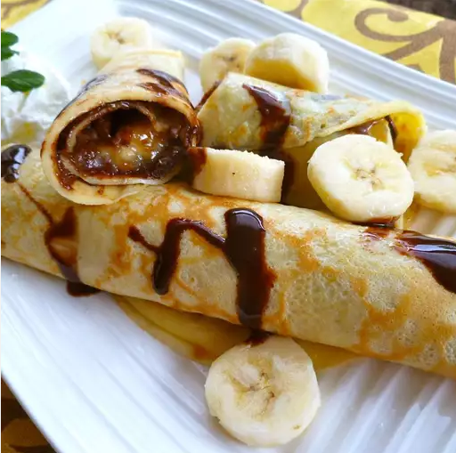

State Fair Crepes

Description
Decades old recipe that my grandmom used to make fantastic crepes!
If you love simple to make yet delicious desserts look no further!
Ingredients
- 1 cup milk
- 4 large eggs
- 1 tablespoon butter, melted
- 1 tablespoon white sugar
- 1 teaspoon almond extract
- 1 ¼ cups all-purpose flour
- 12 slices bacon
- 3 tablespoons butter, or as needed - divided
- 6 firm bananas, sliced in half lengthwise
- 12 tablespoons chocolate-hazelnut spread (such as Nutella®), divided
- 12 tablespoons peanut butter, divided
- ½ tablespoon honey, divided
- 1 teaspoon confectioners' sugar for dusting, or as needed
- 1 tablespoon chocolate syrup, or as needed
Steps
- Blend milk, eggs, 1 tablespoon melted butter, white sugar, almond extract, and flour in a blender into a smooth batter, 1 to 2 minutes.
Allow the batter to rest while you finish the remaining steps, at least 20 minutes.
- Cook the bacon in a large, deep skillet over medium-high heat until evenly browned, about 10 minutes; drain on a paper towel-lined plate.
- Melt 1 teaspoon butter on a crepe pan or in a non-stick skillet over medium heat. Pour in 1/4 cup of batter, swirl the pan to evenly coat
the entire bottom of the pan with the thin batter, and cook until small brown spots appear on the bottom of the crepe, 2 to 3 minutes.
- Carefully loosen crepe from the pan and gently flip to cook other side, 1 to 2 more minutes. Crepe is done when the batter in the center is set and a few small brown spots appear on the 2nd side.Carefully loosen crepe from the pan and gently flip to cook other side, 1 to 2 more minutes.
Crepe is done when the batter in the center is set and a few small brown spots appear on the 2nd side.
- Slide crepe onto a plate lined with a piece of parchment paper.
Cook remaining crepes, buttering the pan when needed, and stack cooked crepes between pieces of parchment paper.
- Melt remaining 2 tablespoons butter in a skillet and cook the sliced bananas until golden brown on both sides, about 3 minutes per side.
Set bananas aside.
- To assemble, place a crepe onto a serving plate and spread 1 tablespoon of chocolate hazelnut spread and 1 tablespoon peanut
butter over the crepe.
- Place a bacon strip in the center of the crepe and top bacon with a banana half.
Drizzle about 1/2 teaspoon of honey over the banana half.
- Roll up the crepe into a cylinder shape; dust with confectioners' sugar and a drizzle of chocolate syrup.
Repeat with remaining ingredients to make 12 filled crepes.